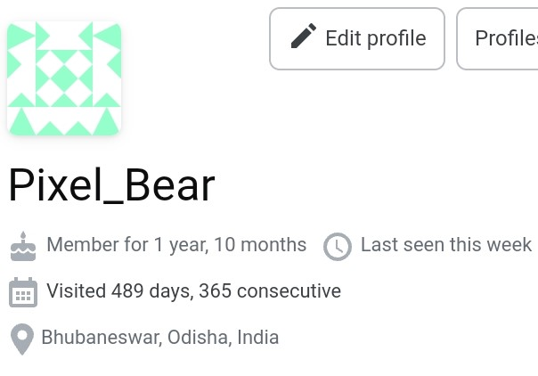

Miscellaneous
- Workshop on Asian Translation 2023
- Participated in Workshop on Asian Translation 2023 (WAT2023), as part of team OdiaGenAI. Link
- We fine-tuned a NLLB-200 model using visual genome dataset, for English=>(Hindi, Bengali, Malayalam) translation.
- Odisha AI ML Conference 2023
- I got an opportunity to present at the Odisha AI ML Conference 2023 as part of team OdiaGenAI.
- I presented demo of roleplay dataset generation, Odia Automatic Speech Recognition and Odia Chatbot. YouTube link
- Generative AI and LLM Workshop 2023
- I presented in two sesssions for the workshop.
- 1st session - Instruction set preparation, where I talked about how to simulated conversations between two persons using GPT-3. Link
- 2nd session - LLM inference and deployment, where I talked about LLM inference and different Quantization techniques. Link
- 1 year streak on StackOverflow

